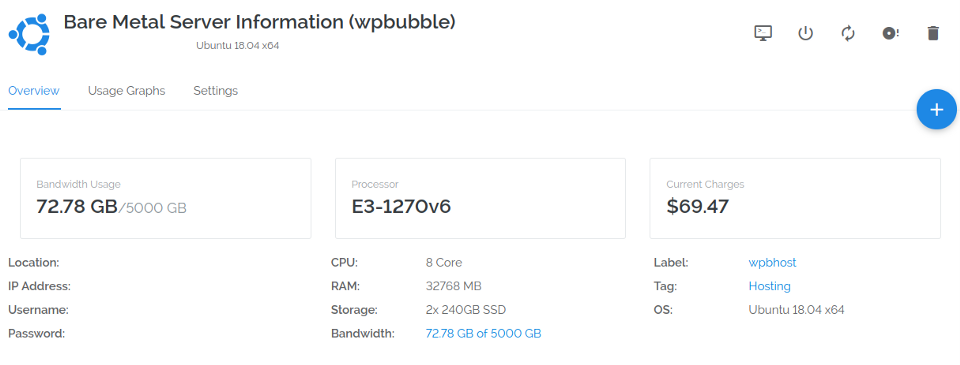

Useful SaaS Apps For Individuals and Businesses
This article requires that you have knowledge of PHP and cURL.
Any links clicked within this article may be affiliate links.
December 30, 2018 — If you aren’t sure what web hosting is — everything on the Internet usually needs a web host. To summarize: the Internet is the Earth. The websites on it are real estate and could be considered houses or commercial buildings, which can be defined with an IP address. The roads on it are the DNS routes. The browser is the car we all drive to visit those places. A web host is where your files are and how everyone finds your real estate on the web. A registrar helps with getting your address, an IP address, that you actually don’t ever really see — which resolves to a name for your website, and usually starts with www.(dot) and ends with (dot)com or another TLD (top level domain) such as (dot)net, (dot)edu, and many others.
There are dozens of web hosts out there, most with the general control panel software, known as cPanel. If you host with GoDaddy, HostGator, HostMonster, BlueHost, or any other mainstream host, you will likely see this type of dashboard software. This is typically the traditional dashboard and looks something like this:
Depending on which plan you have and your experience, you may be limited to some features, while others you may use a day in your life. For web managers and web developers, they will likely access many of the tools on the cPanel, but for the most part, you can get away with just clicking a few areas and getting your website up and running.
The cPanel you see above is software sitting on a computer that you can access and modify your server with, usually uploading files, such as index.html or index.php that render to an actual home page. cPanel itself costs money and web hosts pay for it by license for X amount of users. In most cases, they get a huge discount by purchasing in bulk, which generally keep the costs very low for their customers.
They all look like the cPanel above with some varying differences of appearance, but all with the same functionality. Many of these hosts are sitting a very large shared server, which basically gives you a piece of the pie, or a set number of resources, among thousands of other websites that are put on the same server. This is known as Shared hosting.
Shared hosting does a great job if you have basic websites and do not need much more than that. Shared hosting is usually used by most bloggers, web designers, and small businesses that just need to get their company name out into the world and on to the Internet. There are, however, web developers who have more demand, and could not operate on a shared. Website that are showing off a simple 5–10 pages or so will have no need for anything more than shared hosting, though some may prefer their own privacy and security.
The downsides of using shared hosting is that it is not as secure; you are using shared resources — meaning if anyone else on the server has more demands for resources, it pulls from your own website, causing slowness and errors. The worst case scenario is that if one site gets hacked on the server by malware or virus, it could potentiall attack every website on the server, though most web hosts do have a lot of security measures involved for shared hosting nowadays. For those that require more security, space, and reliability, there is definitely more services available.
Aside from the cPanel, there are some companies that have created their own customized panels, or if you decide to run your own VPS container, like on Vultr, or a homeserver like antsle*, you can install your own manually, or through Git. These control panels are VestaCP, Ajenti, CentOS Web Panel, Webmin, WHM, ZPanel, and more.
If you use a service like DreamHost, you will find they have a completely customized control panel they built with all the tools you would need to create new websites, spin up new servers entirely, add new domains, transfer domains, and host websites, including routing the DNS and CName or A name records to work through DreamHost. DreamHost also offer email which is definitely a great addition to a good host. Not to make this article about DreamHost, but they were my first official host located in the United States, and I definitely recommend their services if you are just starting out — usually help and resolve all of your problems within 24 hours and getting your feet wet into the world of hosting websites, this is not a bad place to start.
As the Internet evolves, so do the demands of what is needed from a host. In order to accompany this, there have been more specialized hosts popping up, for which their servers are optimized for specific platforms. There are Drupal hosts, Joomla hosts, WordPress hosts, NodeJS hosts, ReactJS hosts, and many other types of hostsout there. There are services dedicated to hosting software such as Magento, Event Espresso, and even Woocommerce or PrestaShop.
These hosts usually tinker with the server beforehand to give you the most optimal server to run your website on, making your website not only fast, but giving it the ability to handle the technical difficulties or problems involved as a website becomes more popular — usually a slower database, slower loading website, etc. WordPress Managed Hosting has become the latest very popular trend — with hosts completely specialized — staff and all — for WordPress. You can find many of these companies with a quick search. They all have an abundance of reviews, more so positive than anything else, and many companies that do not want to worry about having to keep the server up to date — or anything at all involving technical difficulties.
Most WordPress Managed Hosting solutions come with an abundance of tools to help the average web developer or web designer, even the average blogger, to include the popular one-click solution method, which often can have a WordPress website installed in just a minute or two, automatic database backup and restoration, etc. The whole point of solutions like these are to make it easier for the website operator. No longer is there worrying about updating the website, updating WordPress, updating plugins, updating themes, and actually logging into the server, and updating it every few weeks.
As a web developer of over 10 years, I wanted to enter into the realm of web hosting, knowing full well that it is saturated with competition. With no marketing budget or way to advertise on a massive scale, I was definitely not deterred. When I first began researching, I was trying to find how I could even build my own web host. It took over a year for me to even start my web host. In my findings, it was revealed to me what most everyone else finds and then officially calls themselves: reseller accounts or reseller hosting accounts.
That is the most you will find when you try to start your own hosting company. In other words: you will work for GoDaddy or HostGator and resell their shared service, VPS, or dedicated servers and they will have you pay a monthly fee so that you can resell their services and keep 100% of the profit. Sounds great, it really does. Best of all, they take care of the support, the tickets, the chats, the upgrades, the emails, etc. You do nothing else except sell the service. You are now officially a “web host” — or at least, a web host reseller service. Many people have found a way to make a good penny this way, but there is still a lot of competition, and offering the “average” web host isn’t going to get you too far unless you already have an audience who actually clicks your links and pays for the services they find through your links.
I wanted none of this. I did not want to resell for a company. I did not want the basic cPanel layout. I did not even want the shared hosting that my clients would get by signing up through me. More importantly: I did not want to pay a company and sell for that same company. I get it: you are paying for the support and everything that comes with it so that when you sell plans, you can keep all the money. Might work for some, but it doesn’t really appeal to me at all. In fact, you are just giving your potential future competition your customers.
This is what a Reseller program looks like from ResellerClub:
It looks lovely, doesn’t? Essentially you are selling for the website ResellerClub. You pay $12.29/month to sell that type of plan, unlimited plans, and you essentially get to keep the profits of however much the plan pays out for someone who signs up for that particular plan. You might even be able to set your own pricing, as they may provide you with a link to a custom website for signups. For many people, this is all they want and prefer.
After all, paying $30/month for the highest plan will fulfill almost everything you might need. All your job requires is that you pay the $30 a month and you recruit clients on the web host that you chose. Again, many people are making a living doing this, and there is nothing wrong with this — they have had all the work done for them, and they are just really involved in sales, possibly even doing the web design aspect of it.
Going this route means that you aren’t really in control of everything and it is taken care of for you. For the majority of people who want to “be a web host” or “run a web host”, this solution is perfect. You are working for the ResellerClub website or other resellers. They own the servers. They run the software on those servers, they update the servers for you, and they essentially make it very easy for you to be a web host. They are the ones who are actually paying the support people when something goes down — all of the hard work is actually done for you, including migrations, apps, easy hosting setup, etc. Set it, sell it, forget it. Well, don’t actually forget it. You have to keep marketing it and selling those plans to keep making money.
This is as far as being a web host goes. The other alternative is that you get a virtual server at Vultr or DigitalOcean and setup your customers manually on these services, either charging them directly by creating an account for them, or upselling it as a service on your own account. In other words: you put their website on Vultr or DO and it may cost $5/month, but you’re actually charging them via invoice or Paypal in the amount of $20/month.
For most web hosts, the basic tools provided are always “good enough” but what happens when you are a web developer who needs more? A majority of hosts are for anyone, but not specialized for web developers. There were things I had to do every time I wanted to set up a website for a client, plugins to install, processes to automate, and security to enhance. What if a web host existed that could automate these processes and did they exist? Of course they do — for the most part, they take care of the simple needs of web developer — but still lacked what I was looking for in a web host.
A WP Bubble Server
Now I didn’t really want to run my own web hosting per se — I did not want the computer setup at my home — as I live in a state where Internet is naturally the second slowest in the country, but I needed a company that could help me run my own servers. The thought had been brewing for a while. I searched and mostly came up with people providing links to reseller services and explaining that you could definitely make good money by promoting the service and acquiring clients that way.
As I wrote earlier, you can definitely go the Reseller route and be done with it. That’s great. You’ll surely give your clients “brand web host” quality service and support and they will make sure everything is done for you. Most reseller web services do often show an image of a bunch of servers. While it is not far from the truth, knowing the exact location of where your servers are is not always straightforward. So spinning up my own and having more control — is what I wanted.
When it comes to your own web hosting, I would assume that you need some type of dedicated server or servers in order to host them. The closest article that even mentions anything relatively similar is called ‘Start a Web Hosting Company’. Even within this article, we can extract some basic information:
Define Your Web Hosting Brand—before you begin, you should establish your name and what your server will do. You could spin up individual servers on a VPS and charge for them or you can get a few dedicated servers. Whatever software you plan to use, even building your own, will define the type of service you are offering.
Find a Dedicated Server Partner — I went with Vultr, spinning up Bare Metal servers, though many people definitely prefer the alternative, DigitalOcean — the good thing about DO is that you can automatically scale it up to its max: CPU Optimized Droplet 64 GB RAM 32 vCPus 400 GB 9 TB Xfer or Standard Droplet 192 GB RAM 32 vCPUs 3.8 GB 12 TB Xfer. Either of these will definitely do the job if needed. Both will require you have a bit of knowledge with API if you want to launch servers — while you won’t have to do this often, there will come a time where you’ve put a maximum amount of clients on a server and need to spin up a new server in case the old one gets full, or maybe they are paying premium — and you’d like to only put 5 or 10 clients on that. However, if you do choose those aforementioned plans from DO, though quite costly, it is unlikely you would ever have to worry about how many clients are on those servers, as with that amount, you can put thousands without issue.
Setup Your Website, Billing System, and Support Channels — A primary website needs to be established to actually sell the service. You will need to understand the type of billing system you want to have. Stripe or Paypal work best. Understanding how to charge is also important. Most web hosting companies go by month or by year. In the case of my web host, WP Bubble, I decided to be different and charge by the day, since technically, you are renting a powerful dedicated server with very few others on it, and depending on what you’ve spun up, it may just be you on your own dedicated server for a long time. As for the support — the whole reason you are doing this is to accept responsibility for hosting your own clients, therefore, other than a possible support ticket to the server provider, you are the one to deal with your own client problems.
Find Web Hosting Clients — luckily for me, I had a few clients on several different hosting solutions, so I decided to bring them all together on a single dedicated server. It wasn’t many clients, about four of them — 2 of them with modest traffic and the others with very little traffic a day. All of them could not be happier to be on something that is so fast. As for getting more: marketing is in the works, which seems to be the main issue for many of us with a low budget!
Grow and Expand — this increases as you find web hosting clients and market your web host. The competition is insane, so don’t expect anyone to even bother with you until you convince them to do so. I had a few beta customers, one stayed, and two churned. You are competing with many other hosts including WP Engine, Kinsta, FlyWheel, GoDaddy, BlueHost, HostMonster, DreamHost, and more — the non-specialized ones start at around $2.99 and sometimes even have deals for “specialized” hosting around the same price. The more specialized hosts, such as Kinsta and WP Engine have been established for quite some time and come with a team of experts, but start at no less than $15 a month and run upwards of well over $99, so you if you can come in around that price, you might definitely be the competition.
A web host needs a server to be possible. The server usually needs NGINX, Apache, MySQL, and Ubuntu or Cent OS installed. The server will also need a “virtual” hypervisor, such as CloudLinux, Cloudmin, Virtualmin, to keep everything separated. A Bare Metal server is best, as these are high-performance machines with a powerful core processor. There are very few alternatives, none of which are free. CloudLinux is probably the best and most used, for a $14/license per server. This is slightly cheaper than the competition, cPanel, which is $20/license.
With CloudLinux, every customer gets their own set of resources, hard disk space, and memory. Those who might pay for higher plans will be allotted more, while those who might start out with a basic plan get less. You learn CloudLinux at your own risk and you should do research before you purchase a license.
A hypervisor is software installed on your hardware that allows you to create limitations on user accounts as well as keep their resources, including files and folders separate. Thus, a hypervisor would eliminate root access and keep everyone “locked” into their own directories, which allows for everyone to have their own domains or subdomains. It is used best for shared hosting.
The other way to create a “virtual” hypervisor on a server is to use a service like ServerPilot or RunCloud. If you go with antsle* as your home server, their software does it automatically as well. RunCloud comes with a free plan and a free trial and allows you to connect an unlimited amount of servers on the Pro plan. You will have to have some knowledge of how to use their API calls to mostly create a new app or delete, along with being able to adjust the settings. You would also need the API of Vultr, DigitalOcean, or antsle to spin up new servers on the fly, in case they fill up. With the API below, you will need to record the ID of the server and store it in a database, so you know where everyone is located, if you plan on having multiple servers.
ServerPilot API: https://github.com/ServerPilot/API
RunCloud API: https://RunCloud.io/api/welcome.html
Antsle API: https://docs.antsle.com/rest/?utm_source=partner&utm_campaign=matthewgates
Unfortunately, a $5 or even a $40 VPS is not going to give you very much CPU core power to run your own hosting business. You might get away with about 15 websites on an $80 VPS, but beware of the strains and demands that might cause the server to hiccup. The $5 server was tested and kept failing after the first creation of a website. The $10 server failed around the second or third website. They would crash and I would be unable to access the server completely until I deleted an instance and rebooted the server.
Once I upgraded to a dedicated server with a lot more power→E3–1270v6 Processor 8 CPU @ 3.8 Ghz 32 GB RAM 5 GB bandwidth and 10GbE Ethernet, I was able to get past the issues of not having enough power. Error messages were far less frequent as well, almost nonexistent. After testing was concluded, I had launched a total of over 50 WordPress websites without any issues at all. There was no downtime, no slowness, and the websites all functioned as expected. A single website with more demands on it did not affect the other at all.
The results definitely exceeded my assumptions. I even attempted to install a website with over 100 plugins. While this will eventually put demands on any server, depending on the plugins and their amount of usage, you can install 100+ active plugins on to a website with that much CPU, though it is recommended you only keep plugins you really need and use active on your website.
With the usage of a hypervisor, you are essentially putting a few customers on a single dedicated server, and could likely get up to 50–100 websites on a single server. With the Vultr Bare Metal server, you are slightly limited to about 220 GB SSD after all is said and done — you can offset this by limiting users to no more than a few GB per instance. For WP Bubble, the cheapest plans come with 1 GB SSD and the most expensive plans come with 6 GB SSD, which should be more than enough, as I encourage my users to use a CDN, which ultimately keeps the server faster and puts more bandwidth demand on the CDN.
Depending on where you host, you can easily get a huge TB hard drive with 128+ GB memory and probably fit about 5,000–10,000 websites on it without any issues at all. Since there is no such thing as unlimited, the idea is to limit server space to just a few that share the server and then spin up a new server once the old one has filled up. Most of the scripting can be done with PHP and a good knowledge of terminal commands.
There are also definitely those times where a user might be doing something that is more resource-demanding, which is why lots of WordPress Managed web hosts tend to ban or advise against certain plugins being installed. It rarely ever causes any other website to slow down, but a restart could be required, and if there are too many websites on a single server, than all must be rebooted.
Both ServerPilot and RunCloud limit user privileges and block users from being able to do anything that root can do. Only your script, either a PHP or sh script can access the entire server, using Linux commands, to be able to control everything accordingly. Features could include auto-optimization of the database, WP-CLI core updates, file monitoring, malware scans, and much more. You will need to have some knowledge of terminal and some automation process going on using cron.
The results of creating my own web host have been exciting. It took almost four months to be completely done and a few more months for bugs and tinkering. I had a single investor who decided to give it a try and I appreciate that client’s patience for dealing with outages and other tweaks, which took down the website a few times. Fortunately, as the bugs in the system were fixed, the few websites on the server themselves have a nearly 100% uptime rate, only going down from their own doing. Not a single website encountered a 404 error due to overloaded resources.
This has been the extent of the resource usage for 18 websites currently on the web host:

With Cloudflare enhancements to the entire server, the bandwidth usage remains low, received in small spikes:
WP Bubble Website Dashboard
As I’ve been re-iterating throughout this article, I could have saved myself the time and money and simply purchased a reseller package plan and paid monthly for it. I wanted to go beyond reselling services for another company and offer my own. But I really did want to build my own web hosting company for the fame and the money, of course! No, I’m kidding. I mean, money does help to support it, so I did go ahead and monetize it, but money wasn’t my main reason for building it.
Getting to the nitty gritty reason of why I built my own web host, I will say that I wanted more control over my own service and my own hosting. In the past, if something happend, and my website went down, I was unable to know the reasons why it went down, and the tech support for whatever hosting company I used, despite how helpful they tried to be, could never tell me the exact reasons why it went down or what happened. I would also have to rely on them to get it back up, usually through a restart, since I had no access to that part of the server.
I wanted my web host to do more things that took me extra time to do. I love the process of automation, so being able to have the server handle most of the work instead of relying on plugins to do the work would make a website even more efficient and my job more efficient. The less I have to worry about when it comes to knowing which websites are out of date, or even checking on them, still takes time out of my day. To have my web host automatically update my websites saves time and worry.
When I first got off of shared hosting, I was completely lost. I had started a blog called Confessions of the Professions. It is still running today and publishes at least one article or infographic per day, five days a week. At its peak, it was receiving between 30,000 to 50,000 visitors a month, from different corporations, small businesses, universities, marketers, and freelancers. The popularity often changes depending on the trends of the job market and careers, but it still receives far more visitors than my mom and my girlfriend, whom were among my very first few readers.
Confessions of the Professions was built on WordPress. At one time, I would have loved to have moved it to Medium.com and host it there, but by the time I decided to do this — they discontinued hosting DNS and I have no desire to give up my “identity” to Medium.com. I would’ve even paid a one-time fee of $75 and $5 per month, as they had offered during their last stint before retiring the DNS service altogether. It had gotten to the point where the website was getting so much traffic and demands that it would go down for a few seconds and sometimes even minutes at a time. I would wake up, only to have received a dozen emails that my website was down.
I first moved it to a $5 VPS but realized immediately it was not going to survive there for long. A little traffic and the site was down. Working in the backend took the site upwards of 5 minutes just to save a page, and it was a gamble — as I would often receive a timeout error, losing my work and had to do it all over again. A $10 VPS thrived for a while, but this too, would receive that same fate.
Confessions of the Professions began over 6 years ago and I never understood what “outgrowing your hosting” meant until this website took it to that level. I also have two clients who I work for who were on that same level as well, crashing because the site just did not have enough power to do anything. One of those clients’ websites actually got deleted by the host who claimed there were “too many tables in the database” — one warning and a day later, it was gone.
Luckily I had a backup and I decided I would move the website to dedicated hosting. Getting it on there required some knowledge, but services like ServerPilot and RunCloud make it pretty easy, creating a hypervisor, which is a container that separates users from affecting each other, so if my website goes down, the client websites whom I am hosting do not go down at all. After moving my website on to a dedicated server, it has not gone down once and can handle just about anything that is thrown at it, including major post editing in the backend and the rare viral post.
Getting back to the automation of web hosting, I needed my web hosting platform to automate mostly everything for a web developer: no worry about core updates, theme updates, or plugin updates, as it would be automatic. No worries about making backups. No worries about cloning website to website. No worries about the time it takes to start a brand new website. No worries about image or database optimization. No worries about a lot of things. All of these features were built into my web host platform, WP Bubble.
Creating a subdomain or propagating your DNS to your domain is made possible by Vultr. There is a one-click solution to just about every thing you would do with a plugin. Rather than pay a monthly fee, you are renting a powerful dedicated server each day, so instead of charging your credit card monthly, you purchase an amount of credits you want, with a certain amount, say 20 to 25 cents per day being deducted. You can refill this amount manually or the system will try to automatically charge your account for you if you choose to do so.
Having my own web host means I know what went into it, how it operates and functions, and how to troubleshoot it if necessary. I know where the server is, how it functions, and every bit of data passed through it, including the CPU power it uses and the bandwidth usage. There is peace of mind in knowing my websites and those of my clients are on a dedicated server that I spun up and put them on. While I encourage you to build your own web host, not just resell the services, give WP Bubble a try today to see how a custom-built web host works!
During the process of building my web host, I decided to add Cloudflare to enhance every website on the server. Cloudflare takes care of a majority of the hits, bandwidth, security, and caching. Over time, as Cloudflare learns the website, and continues to cache what it can, the website becomes even faster in speed. Since all of the websites at WP Bubble are running WordPress, Cloudflare has a great relationship with understanding the coding structure of WordPress and does a great job with caching everything on the frontend and even the backend, where necessary.
Cloudflare gave me the confidence to know that I could host hundreds of websites on several servers without any issues. Without Cloudflare, I noticed the bandwidth was being used up quite quickly, and after adding Cloudflare, the bandwidth was cut down by nearly 90%, depending on the type of website chosen on the WP Bubble platform.
While there were some fustrations Cloudflare being too good at caching, these have mostly been resolved. For instance, I had Cloudflare enabled upon the generation of a website, which would cache the website instantly, leaving any changes to not be reflected. After turning this off when generating a website, it is left up to the user to turn Cloudflare on again, but during the development of any website, Cloudflare should not be enabled, as changes may not be seen.
WP Bubble Demo Pingdom Test
Overall, Cloudflare has been amazing for WP Bubble and all the websites on the platform. WP Bubble itself — the dashboard — is utilizing Cloudflare, and usually takes no more than a second to load every page. Speed, security, and all things that we think of that should come with a web host are taken care of by Cloudflare’s service.
In a previous paragraph, I provided the links to the API that makes it possible to write your own web hosting application. It is all done with PHP with some Linux functionality added into the mix. Some developer might knock me for using PHP or think it makes the service worse, but it is as powerful as any other language that could write it. I love PHP.
I’d predict that 80% of the Internet currently uses PHP and many useful applications out there run on PHP. As corporations prefer Python, Ruby, C#, C++, ASP.NET, and Javascript, along with Node and React, as well as others, PHP is still a very powerful force that can get a lot done. In just a few minutes, you can have PHP communicating with a database, and have built a To-Do list application in less than a half hour.
Most of what a developer does, especially one who builds things, is use the API of another service. There are certainly those exceptional developers and founders who build it all from scratch and utilize their own platforms and services, but for what I do; I utilize the API of other services, turn them into something useful, re-purpose them, and re-sell the services, and charge a fee to use them.
I will not go into exact detail of how I built my web host or provide the source code, as there is just too much code — about 3.5 GB of libaries and code I’ve borrowed or written from other sources including AWS, DreamObjects, Vultr, ServerPilot, Cloudflare, BrainTree, Paypal, and Stripe to make the WordPress Managed Hosting solution, WP Bubble, a feature-rich service as a web host possible. What I can reveal is that many things that WP Bubble does is an API call to an external service, or it utilizes the installed application (AutoMySQLBackup, Top, Lsof, etc.) commands of the Linux server, for which it runs on, Ubuntu 18.04. Most of everything I am doing can be found in the Github sources I’ve provided in this paragraph and the ServerPilot or RunCloud API.
Finding the right framework and dashboard for your purposes of making it custom the way you would like to see it, and not forgetting to add a touch of user-friendliness into the mix, can take time. Deciding on the language you want to use, and you are certainly not limited to PHP, can help you decide how you will go about doing it. Almost every language works with cURL so if the API involves cURL, it can almost always be used to help create your web host.
You could probably even use the API of Firebase to host a website or host websites on Heroku using the Heroku API. You could also use hosting websites like DigitalOcean, Vultr, or Linode. You can use their API and spin up a server on command, while hosting it on your account. The other way is to host your own dedicated computer at home and use the API. Whatever your method of hosting, ease of use and customer support should be your main priorities.
A side note: Being a host is a task in itself. Ensuring that data is protected and backed up is also very important. As a result, I have a crontab making a daily backup of all data on all servers at midnight. On another server from Vultr that I rent for $2.50 a month, I attached a free 50 GB Block Storage during a promotion Vultr was offering.
That mini server a single job to do: a cronjob to download each backup an hour after the backup is made. In the morning, the original backup files are deleted. Storage on this mini server holds a week worth of backup data just in case the original server should ever fail or any data loss ensues, than I can always pull it from the backup server so nothing is ever lost. Fortunately, I’ve never had to use it for the entire server, but I did accidentally delete one of my own websites, which I was able to restore in mere minutes.
While becoming a web host for clients using your own service, rather than becoming a reseller is definitely not something for everyone, it can be very rewarding, especially when you have the ability to build your own features into the server itself. It did not come without its hiccups and bugs, but the only real limitations you have are by the machine you chose and what Linux allows you to do. If you ever decide you want to become your web host, know that it is very possible beyond the typical reseller service. It may require knowledge of the terminal, linux commands, PHP, cURL, and the API of many useful servcies, but it will be well worth it on your jouney to become a web host.
You can give my web host a try at wpbubble.com and gain inspiration for building your own!
antsle*: Use coupon code MATTHEWGATES for a 10% discount and FREE SHIPPING.
WP Bubble: Use coupon code trywpb5 to apply $5 towards your account.
This article was originally published on Hackernoon at https://hackernoon.com/the-journey-to-becoming-a-web-host-3de489d2c05c.